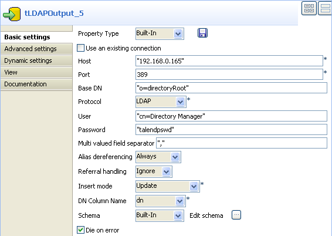

Scenario: Editing data in an LDAP directory
The following scenario describes a job that reads an LDAP directory, updates the email of a selected entry and displays the output before writing the LDAP directory. To keep it simple, no alias dereferencing nor referral handling is performed. This scenario is based on LDAPInput's Scenario: Displaying LDAP directory's filtered content. The result returned was a single entry, related to an organisational person, whom email is to be updated.

- Click and drop the tLDAPInput, tLDAPOutput, tMap and tLogRow components.
- Connect the input component to the tMap then to the tLogRow and to the output component.
- In the tLDAPInput properties view, set the connection details to the LDAP directory server as well as the filter as described in Scenario: Displaying LDAP directory's filtered content.
- Change the schema to make it simpler, by removing the unused fields: dc, ou, objectclass.
- Then open the mapper to set the edit to be carried out.
- Drag & drop the uid column from the input table to the output as no change is required on this column.
- In the Expression field of the dn column (output), fill in with the exact expression expected by the LDAP server to reach the target tree leaf and allow directory writing on the condition that you haven't set it already in the Base DN field of the tLDAPOutput component.
- In this use case, the GetResultName global variable is used to retrieve this path automatically. Press Ctrl+Space bar to access the variable list and select
tLDAPInput_1_RESULT_NAME. - In the mail column's expression field, type in the new email that will overwrite the current data in the LDAP directory. In this example, we change to Pierre.Dupont@talend.com.
- Click OK to validate the changes.
- The tLogRow component doesn't need any particular setting.
- Then select the tLDAPOutput component to set the directory writing properties.
- Set the Port and Host details manually if they aren't stored in the Repository.
- In Base DN field, set the highest tree leaf you have the rights to access. If you haven't set previously the exact and full path of the target DN you want to access, then fill in it here. In this use case, the full DN is provided by the dn output from the tMap component, therefore only the highest accessible leaf is given: o=directoryRoot.
- Select the relevant protocol to be used: LDAP for this example.
- Then fill in the User and Password as expected by the LDAP directory.
- Use the default setting of Alias Dereferencing and Referral Handling fields, respectively Always and Ignore.
- The Insert mode for this use case is Update (the email address).
- The schema was provided by the previous component through the propagation operation.
- Save the job and execute.




The output shows the following fields: dn, uid and mail as defined in the job.